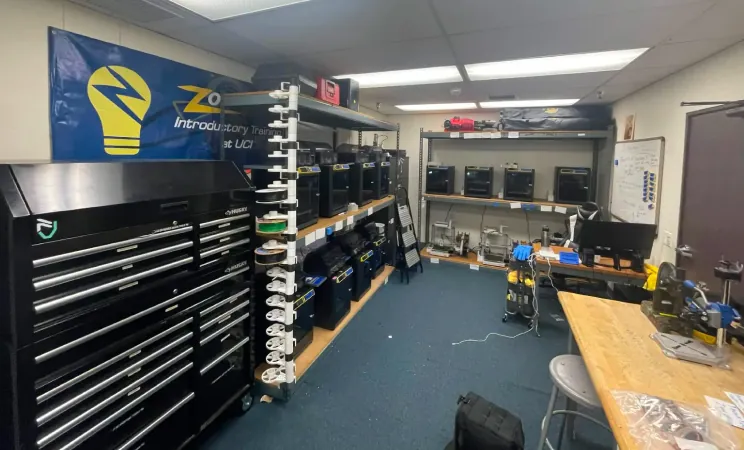
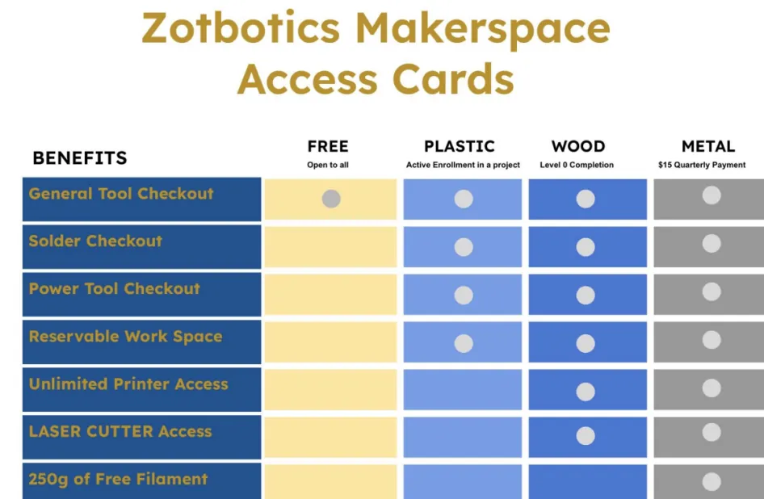
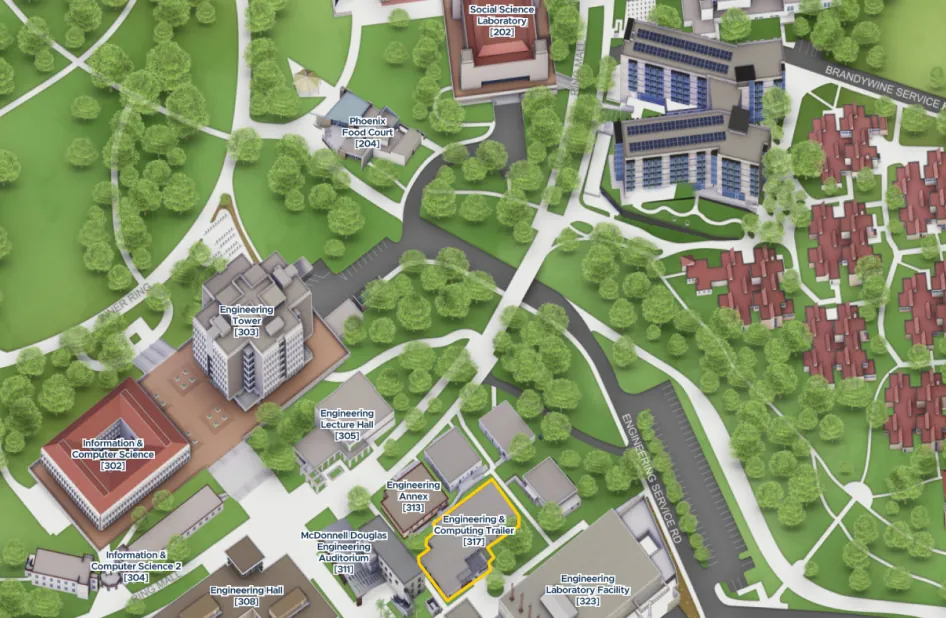

About our Makerspace
Located at Engineering and Computing Trailer 120H, Zotbotics hosts a flagship, fully student ran makerspace. Whether you are a complete beginner or a seasoned builder, you will find the tools you need to bring your personal and academic projects to life, with machines ranging from 3D printers to soldering stations. Built by students, for students, our dedicated Makerspace Managers are always on hand to provide guidance and answer your questions.
Makerspace Status
Updated by ZIMS officers — check back for the latest status.
Our Equipment
3D Printing
20 Bambu P1S 10 Bambu A1 Filament: Bring your own – Free Filament – $8 per 100g Printings are walk in only
Hand & Power Tools
Atomstack A70 Max Laser Cutter Soldering Irons Drills Impact Drivers Power Sanders Circular Saws Jigsaws and more
Access Cards
An access card is required to enter the makerspace, check out items, and use our tools and consumables. Please remember to scan your card every time you sign in and out of the facility. You can purchase a temporary access card via a quarterly fee or earn a permanent card by completing at least one Zotbotics Introductory Training project. We also offer a free access card tier that provides limited tool usage. Please refer to the chart for more details.

Locate Us
We are located in the Engineering and Computing Trailer, room 120H. You can find us near the bridge from Brandywine, just across the street from the Engineering Lecture Hall. The entrance faces the Engineering Laboratory Facility, looking away from Ring Road. Please refer to the provided map, where our building is highlighted in yellow.
